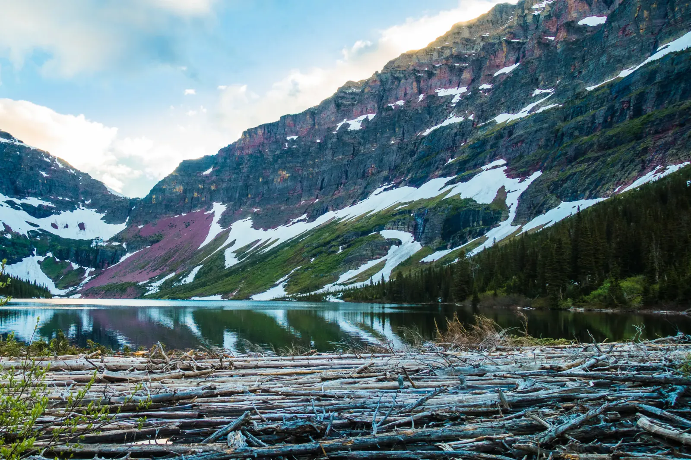

Painted Peaks
Winter hadn't finished with Glacier in mid-June. Snow clung to nearly every slope of the Two Medicine valley on the park's east side, and avalanche chutes ran all the way down to the lakeshore. What stopped me was the color of the rock. Much of it is argillite, mud from the floor of an ancient shallow sea that hardened into stone more than a billion years ago, and the iron in it rusted the layers red and purple. Sinopah, the big pyramid above Two Medicine Lake, is banded like a layer cake, and the snow was the frosting!
I had two days and a tent. (Backcountry camping in Glacier takes a permit and a designated site, so plan ahead.) I hiked up the valley toward Upper Two Medicine Lake, and by the time I got there the evening sun had turned a horn of rock above the trees gold. The water was so still it held a perfect copy of the cliffs. At the outlet lay a gigantic jam of bleached logs, heaped like pick-up sticks. Avalanche chutes run right down to that water, so I'd guess winter keeps adding to the pile. Between those ancient cliffs and a woodpile that took who knows how many winters to build, two days barely register. I pitched my tent and watched the last gold leave the cliffs.

I woke to low cloud and drizzle, and the valley changed its mood overnight. Dark clouds gathered behind a spire of rock, and mist hung in the spruce. With all that snow melting, the creeks were running hard. On the way out, the trail passed waterfalls pouring between mossy ledges, one with a fallen log spanning the top like a footbridge I wouldn't trust. Even the creek stones were that same red. Glacier covers more than a million acres, and this was one valley of it.